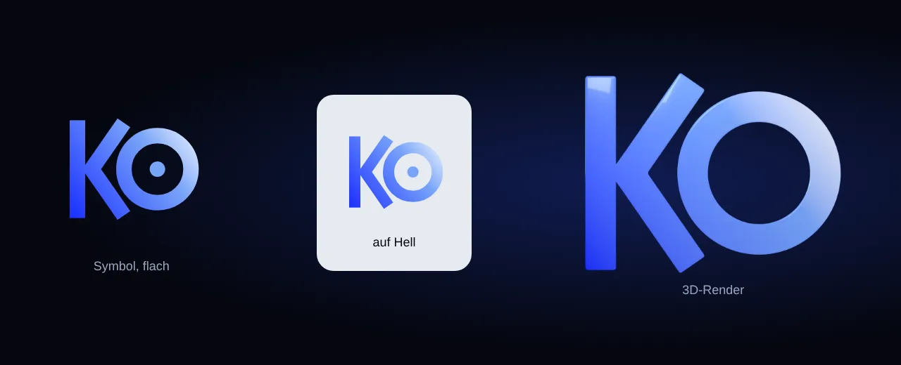
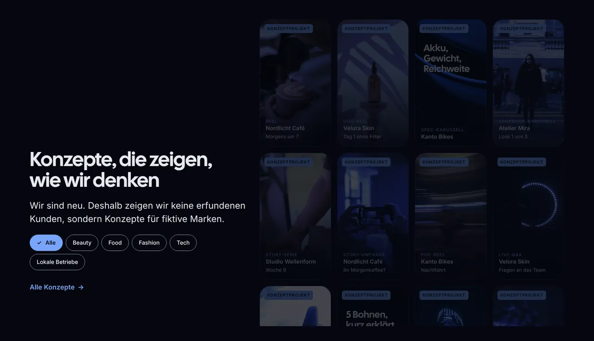

KIVORA: Marketingagentur (Konzept-Website)
Eine Konzept-Website für eine junge Marketingagentur in Dresden: eigenes Symbol, Video im Logo und Konzeptprojekte statt erfundener Referenzen.

Konzept-Website, nicht die offizielle Seite von KIVORA. Ich habe sie als kostenlosen Vorschlag gebaut. Die gezeigten Arbeiten sind Konzepte für erfundene Marken, alle Zahlen sind Ziele und keine Ergebnisse. Die Demo ist für Suchmaschinen gesperrt, das Kontaktformular sendet nichts.
KIVORA ist eine junge Marketingagentur aus Dresden: Strategie, Content wie Reels, Karussells und Stories, und ein ehrlicher Blick darauf, was davon wirkt. Neue Agenturen haben dasselbe Problem wie ich am Anfang: noch keine Kunden, die man zeigen kann. Die Website sollte trotzdem zeigen, wie die Agentur denkt, ohne etwas zu erfinden.
Im Mittelpunkt steht das Logo. Aus K und O ist ein Symbol geworden, das auch klein funktioniert: ein Balken mit Winkel für das K, ein Ring mit Punkt für das O, wie eine Kameralinse. Auf der Startseite steht das Symbol groß in 3D, und im O läuft ein kurzes Video: eine Person filmt nachts die Stadt mit dem Handy. Genau das macht eine Content-Agentur.

Statt erfundener Referenzen zeigt die Seite fünf Konzeptprojekte für fiktive Marken, vom Café bis zum Fahrradladen. Jedes hat eine eigene Seite mit Ausgangslage, Idee, Formaten und dem Ziel, an dem sich die Agentur messen würde. Jede Karte trägt deutlich das Etikett „Konzeptprojekt“, und unter jedem Ziel steht, dass es kein Ergebnis ist. Die Arbeiten lassen sich nach Branche filtern.

Technisch ist die Seite schlank: reines HTML, CSS und JavaScript, alle Texte in einer einzigen Datei, aus der die Seiten erzeugt werden. Bilder liegen in AVIF und WebP in mehreren Größen vor, mit eigenem Bildausschnitt fürs Handy. Schriften liegen auf dem eigenen Server, es gibt keine Tracker. Vor der Übergabe habe ich Links, Ladezeit und Bedienbarkeit mit eigenen Prüfskripten getestet.
Wie die Seite entstanden ist: Logo, Assets und Ziele im Blog
Demo ansehen: yaseno2186.github.io/kivora-demo